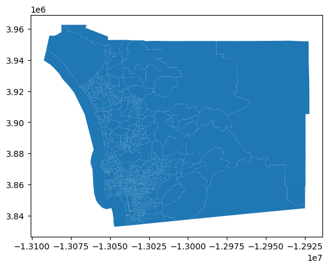
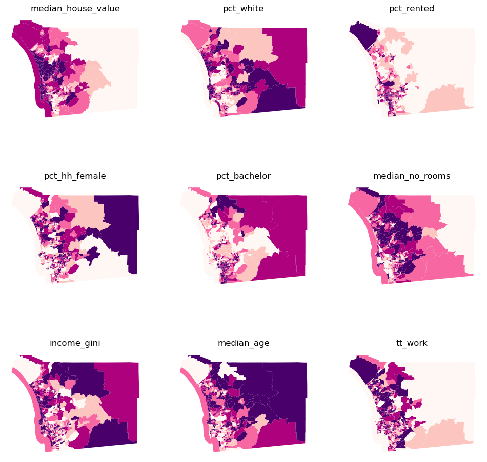
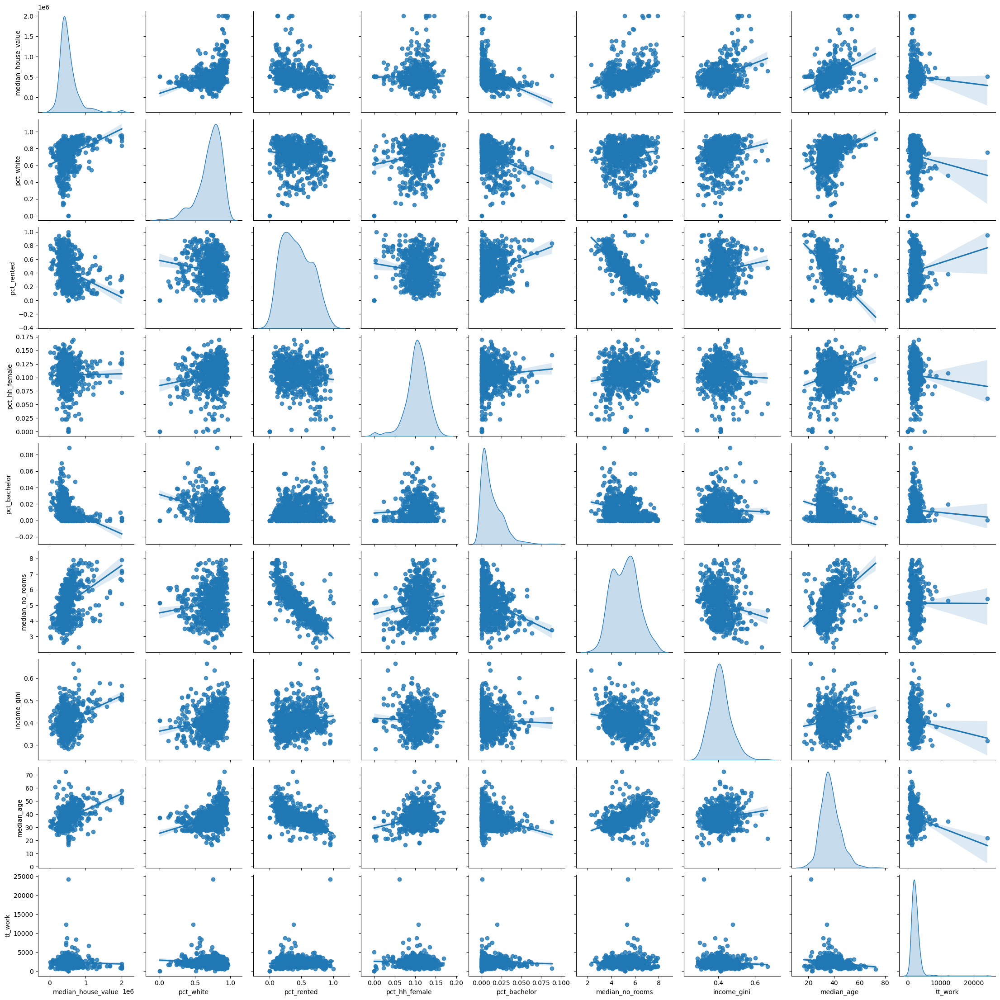
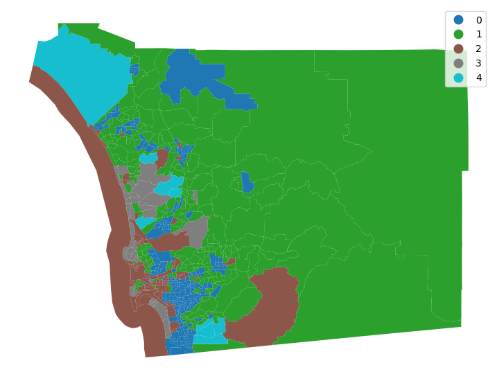
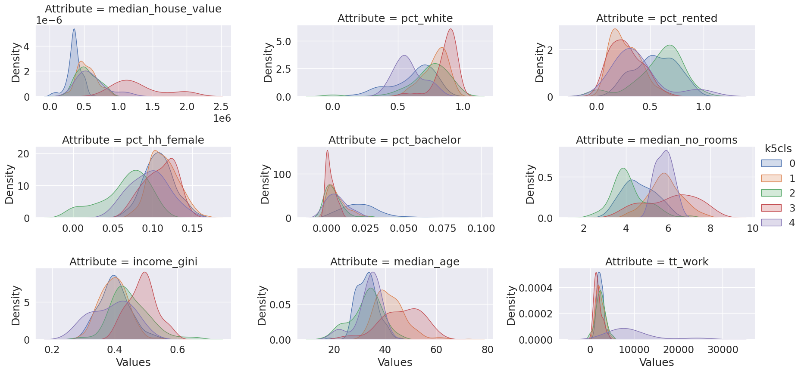

import geopandas as gpd
import matplotlib.pyplot as pltClustering
db = gpd.read_file("~/data/shared/sandiego_tracts.gpkg")ERROR 1: PROJ: proj_create_from_database: Open of /opt/tljh/user/share/proj faileddb.shape(628, 25)db.head()| GEOID | median_age | total_pop | total_pop_white | tt_work | hh_total | hh_female | total_bachelor | median_hh_income | income_gini | ... | state | county | tract | area_sqm | pct_rented | pct_hh_female | pct_bachelor | pct_white | sub_30 | geometry | |
|---|---|---|---|---|---|---|---|---|---|---|---|---|---|---|---|---|---|---|---|---|---|
| 0 | 06073018300 | 37.1 | 2590.0 | 2375.0 | 1299.0 | 2590.0 | 137.0 | 0.0 | 62500.0 | 0.5355 | ... | 06 | 073 | 018300 | 2.876449 | 0.373913 | 0.052896 | 0.000000 | 0.916988 | False | POLYGON ((-13069450.120 3922380.770, -13069175... |
| 1 | 06073018601 | 41.2 | 5147.0 | 4069.0 | 1970.0 | 5147.0 | 562.0 | 24.0 | 88165.0 | 0.4265 | ... | 06 | 073 | 018601 | 4.548797 | 0.205144 | 0.109190 | 0.004663 | 0.790558 | False | POLYGON ((-13067719.770 3922939.420, -13067631... |
| 2 | 06073017601 | 54.4 | 5595.0 | 4925.0 | 1702.0 | 5595.0 | 442.0 | 34.0 | 110804.0 | 0.4985 | ... | 06 | 073 | 017601 | 8.726275 | 0.279029 | 0.078999 | 0.006077 | 0.880250 | False | POLYGON ((-13058166.110 3907247.690, -13058140... |
| 3 | 06073019301 | 42.3 | 7026.0 | 5625.0 | 3390.0 | 7026.0 | 638.0 | 46.0 | 100539.0 | 0.4003 | ... | 06 | 073 | 019301 | 3.519743 | 0.196512 | 0.090806 | 0.006547 | 0.800598 | False | POLYGON ((-13056896.290 3925255.610, -13056868... |
| 4 | 06073018700 | 21.8 | 40402.0 | 30455.0 | 24143.0 | 40402.0 | 2456.0 | 23.0 | 41709.0 | 0.3196 | ... | 06 | 073 | 018700 | 559.150793 | 0.949887 | 0.060789 | 0.000569 | 0.753799 | False | POLYGON ((-13090788.510 3946435.430, -13090736... |
5 rows × 25 columns
db.columnsIndex(['GEOID', 'median_age', 'total_pop', 'total_pop_white', 'tt_work',
'hh_total', 'hh_female', 'total_bachelor', 'median_hh_income',
'income_gini', 'total_housing_units', 'total_rented', 'median_no_rooms',
'median_house_value', 'NAME', 'state', 'county', 'tract', 'area_sqm',
'pct_rented', 'pct_hh_female', 'pct_bachelor', 'pct_white', 'sub_30',
'geometry'],
dtype='object')db.plot()
cluster_variables = [
"median_house_value",
"pct_white",
"pct_rented",
"pct_hh_female",
"pct_bachelor",
"median_no_rooms",
"income_gini",
"median_age",
"tt_work"
]f, axs = plt.subplots(nrows=3, ncols=3, figsize=(12,12))
axs = axs.flatten()
for i, col in enumerate(cluster_variables):
ax = axs[i]
db.plot(column=col, ax=ax, scheme="Quantiles", linewidth=0, cmap='RdPu')
ax.set_axis_off()
ax.set_title(col)
plt.show()

import seaborn_ = seaborn.pairplot(
db[cluster_variables], kind='reg', diag_kind='kde'
)
db[['income_gini', 'median_house_value']].head()| income_gini | median_house_value | |
|---|---|---|
| 0 | 0.5355 | 732900.000000 |
| 1 | 0.4265 | 473800.000000 |
| 2 | 0.4985 | 930600.000000 |
| 3 | 0.4003 | 478500.000000 |
| 4 | 0.3196 | 515570.896382 |
from sklearn import metricsmetrics.pairwise_distances(
db[["income_gini", "median_house_value"]].head()
).round(4)array([[ 0. , 259100. , 197700. , 254400. , 217329.1036],
[259100. , 0. , 456800. , 4700. , 41770.8964],
[197700. , 456800. , 0. , 452100. , 415029.1036],
[254400. , 4700. , 452100. , 0. , 37070.8964],
[217329.1036, 41770.8964, 415029.1036, 37070.8964, 0. ]])from sklearn.preprocessing import robust_scaledb_scaled = robust_scale(db[cluster_variables])cluster_variables['median_house_value',
'pct_white',
'pct_rented',
'pct_hh_female',
'pct_bachelor',
'median_no_rooms',
'income_gini',
'median_age',
'tt_work']metrics.pairwise_distances(
db_scaled[:5, [0,6]]).round(4)array([[0. , 1.976 , 1.0012, 2.3081, 3.3925],
[1.976 , 0. , 2.2057, 0.397 , 1.6273],
[1.0012, 2.2057, 0. , 2.4106, 3.2197],
[2.3081, 0.397 , 2.4106, 0. , 1.2312],
[3.3925, 1.6273, 3.2197, 1.2312, 0. ]])k-means
from sklearn.cluster import KMeanskmeans = KMeans(n_clusters=5)import numpy as np
np.random.seed(1234)
k5cls = kmeans.fit(db_scaled)k5cls.labels_[:5]array([2, 1, 3, 1, 4], dtype=int32)k5cls.labels_.max()4k5cls.labels_.min()0db['k5cls'] = k5cls.labels_
f, ax = plt.subplots(1, figsize=(9,9))
db.plot(column='k5cls', categorical=True, legend=True, linewidth=0, ax = ax)
ax.set_axis_off()
plt.show()
k5sizes = db.groupby("k5cls").size()
k5sizesk5cls
0 248
1 244
2 88
3 39
4 9
dtype: int64areas = db.dissolve(by='k5cls', aggfunc='sum')['area_sqm']
areask5cls
0 739.184478
1 8622.481814
2 1335.721492
3 315.428301
4 708.956558
Name: area_sqm, dtype: float64k5means = db.groupby('k5cls')[cluster_variables].mean()k5means.round(3)| median_house_value | pct_white | pct_rented | pct_hh_female | pct_bachelor | median_no_rooms | income_gini | median_age | tt_work | |
|---|---|---|---|---|---|---|---|---|---|
| k5cls | |||||||||
| 0 | 356997.331 | 0.620 | 0.551 | 0.108 | 0.023 | 4.623 | 0.400 | 32.783 | 2238.883 |
| 1 | 538463.934 | 0.787 | 0.270 | 0.114 | 0.007 | 5.850 | 0.397 | 42.057 | 2244.320 |
| 2 | 544888.738 | 0.741 | 0.596 | 0.065 | 0.005 | 4.153 | 0.449 | 32.590 | 2349.511 |
| 3 | 1292905.256 | 0.874 | 0.275 | 0.109 | 0.002 | 6.100 | 0.488 | 46.356 | 1746.410 |
| 4 | 609385.655 | 0.583 | 0.377 | 0.095 | 0.007 | 5.800 | 0.391 | 33.500 | 9671.556 |
tidy_db = db.set_index('k5cls')
tidy_db = tidy_db[cluster_variables]
tidy_db = tidy_db.stack()
tidy_db = tidy_db.reset_index()
tidy_db = tidy_db.rename( columns = {"level_1": "Attribute", 0: "Values"}
)
tidy_db.head()| k5cls | Attribute | Values | |
|---|---|---|---|
| 0 | 2 | median_house_value | 732900.000000 |
| 1 | 2 | pct_white | 0.916988 |
| 2 | 2 | pct_rented | 0.373913 |
| 3 | 2 | pct_hh_female | 0.052896 |
| 4 | 2 | pct_bachelor | 0.000000 |
tidy_db.head(20)| k5cls | Attribute | Values | |
|---|---|---|---|
| 0 | 2 | median_house_value | 732900.000000 |
| 1 | 2 | pct_white | 0.916988 |
| 2 | 2 | pct_rented | 0.373913 |
| 3 | 2 | pct_hh_female | 0.052896 |
| 4 | 2 | pct_bachelor | 0.000000 |
| 5 | 2 | median_no_rooms | 3.900000 |
| 6 | 2 | income_gini | 0.535500 |
| 7 | 2 | median_age | 37.100000 |
| 8 | 2 | tt_work | 1299.000000 |
| 9 | 1 | median_house_value | 473800.000000 |
| 10 | 1 | pct_white | 0.790558 |
| 11 | 1 | pct_rented | 0.205144 |
| 12 | 1 | pct_hh_female | 0.109190 |
| 13 | 1 | pct_bachelor | 0.004663 |
| 14 | 1 | median_no_rooms | 6.500000 |
| 15 | 1 | income_gini | 0.426500 |
| 16 | 1 | median_age | 41.200000 |
| 17 | 1 | tt_work | 1970.000000 |
| 18 | 3 | median_house_value | 930600.000000 |
| 19 | 3 | pct_white | 0.880250 |
seaborn.set(font_scale=1.5)
facets = seaborn.FacetGrid(
data=tidy_db,
col='Attribute',
hue='k5cls',
sharey=False,
sharex=False,
aspect=2,
col_wrap=3)
_ = facets.map(seaborn.kdeplot, 'Values', fill=True).add_legend()